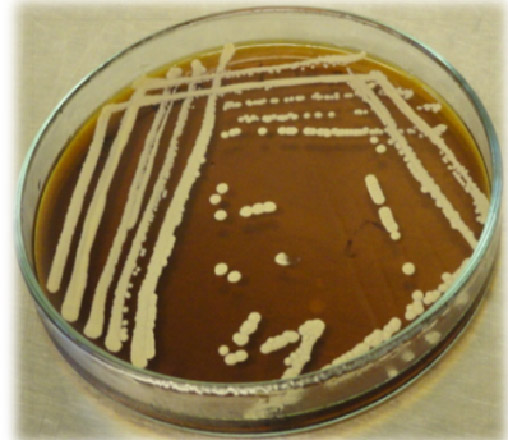
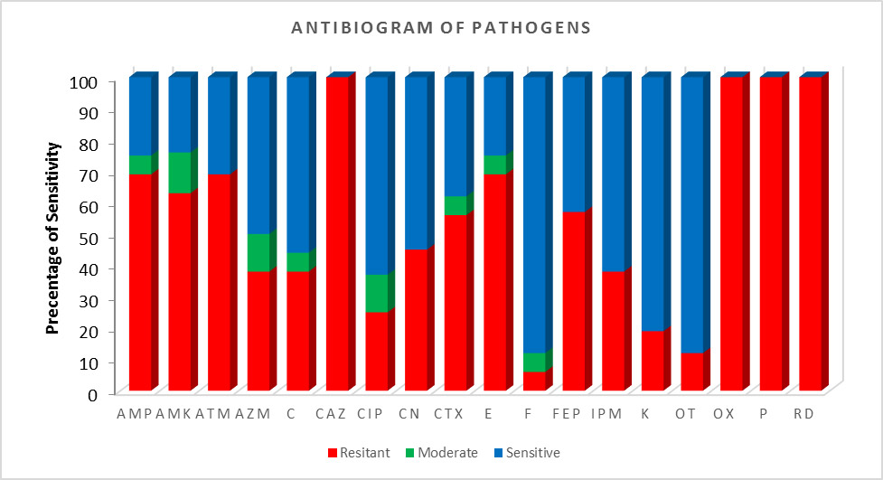
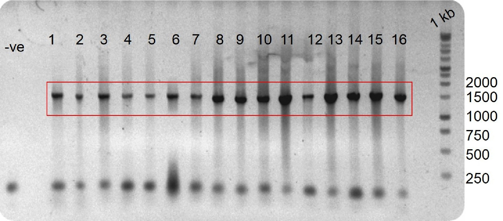
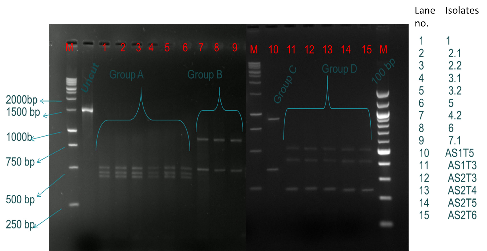
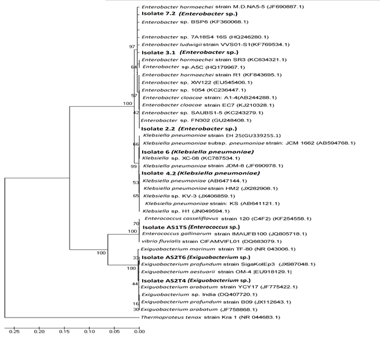
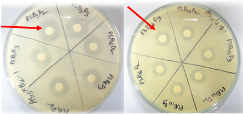
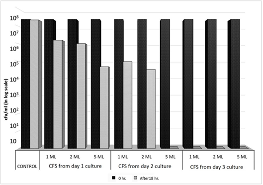

Current Affairs
Proceedings of international conference on biotechnology, 25-26 May, 2013
PROBIOTIC TECHNOLOGY FOR SUSTAINABLE DISEASE MANAGEMENT OF PRAWN AQUACULTURE IN BANGLADESH
FARZANA E. HOSSAIN, ABU MD. RAMIM, SABIKUNNAHAR, SHAFIQUR RAHMAN, M. NIAMUL NASER1 AND MUHAMMAD MANJURUL KARIM*
Department of Microbiology and 1Department of Zoology, Faculty of Biological Sciences, University of Dhaka, Dhaka 1000, Bangladesh
ABSTRACT
Macrobrachium rosenbergii, the giant fresh water prawn is one of the most important commercially-produced crustaceans in Bangladesh. A significant limitation to the industry is loss of productivity owing to the emergence of a large variety of pathogenic bacteria and viruses, and their resistance to chemotherapeutic drugs resulting in mass mortality and consequent crop failure. Finding a public health and environment-friendly alternative is therefore a burning question to ensure sustainability of this industry in Bangladesh.
Molecular fingerprinting of randomly selected pathogens that were associated with huge prawn mortality was addressed for their identification. Probiotics – the friendly bacteria with a host of benefits that work by competitive exclusion of pathogenic bacteria can be a suitable alternative. This study aims to test probiotic bacteria able to inhibit growth of pathogenic bacteria that caused prawn mortality.
Following a disease outbreak in prawn hatcheries of Sathkhira and Khulna regions during May 2012, samples were collected immediately from dead prawn larvae, rearing water and fish feed in order to isolate and characterize the pathogenic bacteria. Subsequently, sixteen of the randomly selected isolates were subjected to amplify their ribosomal DNA to do amplified rDNA restriction analysis (ARDRA) followed by sequencing and phylogenetic analyses of the isolates in order to address their identification. The antibiogram of the isolated pathogens was conducted before they were challenged with probiotic bacteria, Lactobacillus spp isolated from curd.
*Author for correspondence: Professor Muhammad Manjurul Karim
Department of Microbiology.University of Dhaka, Dhaka 1000
Tel: 01715 490535,Fax: 880 2 861 5583
email: manjur@univdhaka.edu
The bacterial isolates causing prawn mortality were identified as Enterobacter spp., Klebsiella pneumoniae, Enterococcus spp. and an extremophile Exiguobacterium spp. Eighteen antibiotics were tested to study the drug-resistance pattern of the isolates. Virtually all the tested isolates (sixteen) showed moderate to resistance states to the drugs tested, and the absolute resistance was recorded to Ceftazidime, Oxacilin, Penicilin G and Rifampicin. In an in vitro attempt to control pathogen’s growth, the cell-free supernatant (CFS) of Lactobacillus spp produced a dose- and age-dependent reduction of bacterial count.
The inhibition of bacterial growth could be attributed to some extracellular substances released from Lactobacillus spp, demonstrating its potential to be an excellent probiotic candidate against the isolates associated with prawn mortality, a possible applications in prawn aquaculture. If successfully translated in culture ponds, this will be an eco-friendly approach to counter bacterial infections without compromising the prawn quality, thereby ensuring food safety in prawn industries of Bangladesh.
Keywords: Probiotic bacteria, Aquaculture, Disease, Food safety, Bangladesh
INTRODUCTION
The bulk of the global aquatic production has been exclusively attributed to Asia. Given the nutritive values and the agro-climatic conditions in the coastal zones, Bangladesh (mainly South-West coastal region) offers one of the most suitable rearing environments in the world for farming different kinds of fishes and crustaceans, and freshwater prawn is the most notable product. Shrimp Aquaculture, popularly regarded as Silver crop of Bangladesh, is the country’s second largest exportable commodity and the giant freshwater prawn commonly known as Golda (Macrobrachium rosenbergii) is one of the most important commercially produced crustaceans. Prawn culture bagged around 25% of the total fish and fisheries exportable commodity of Bangladesh and based on the steady progress in the last decade, Bangladesh aims to earn US$ 1 billion in the year 2014-15 exclusively from this sector.(1)
Ironically, this giant sector has been stumbled adversely, according to a World Bank report that estimated the global losses due to shrimp diseases are around US$ 3 billion.(2) Shrimp farmed in both salt water and freshwater are becoming increasingly vulnerable to bacterial infection due to the ease with which pathogens are transmitted in aquaculture.(3) Addressing those threats caused by virus, bacteria, fungi or protozoa has become a great challenge to sustain and scale up this trend. Regular application of protein rich feed, high density of prawn in hatchery tank and rearing ponds rendering as a vital factor for immense pathogen propagation. Vibrio species, though comprise a major part of normal flora of crustaceans, have been reported as the predominant causative agents for numerous disease outbreaks.(4-6) They are ubiquitous and a predominant component of prawn culture environment.(7-10) A significant limitation to the industry is loss of productivity owing to the emergence of a large variety of pathogenic bacteria and viruses, and their resistance to chemotherapeutic drugs resulting in mass mortality and consequent crop failure.(11)
The use of antibiotics to control diseases was widely practiced; however its indiscriminate use led to the emergence of numerous multiple drug-resistant (MDR) bacteria, and is now a serious issue of public health concern. Together with MDR bacteria, the presence of specific pathogenic bacteria (SPB) in raw and processed prawn has also been posing a serious threat for the viability of this export sector because of consignment rejections by importing countries on the ground of biosecurity. In a nutshell, their presence not only damages farm productivity, but also affects the export performance and the situation thus affects the whole value chain. Finding a public health and environment-friendly alternative is therefore a burning question to ensure sustainability of this industry in Bangladesh.
The use of nonpathogenic probiotic bacteria appeared as a novel alternative as bio-control agent for disease prevention.(12) These so-called beneficial bacteria are not therapeutic agents but will alter directly or indirectly the composition of the microbial community in the rearing environment and in the shrimp gut(13-14) without causing any harm to the host(15) once applied to the rearing tanks and ponds directly or with the feed respectively.(16) Historically, probiotic cultures have been associated with lactobacilli, cultured from milk and dairy products.(17) The primary antimicrobial effect exerted by lactobacilli is by the production of lactic acid and reduction of pH. However, there are other metabolic products such as hydrogen peroxide, diacetyls, propionic acid, acetic acid, carbon dioxide, reuterin, and bacteriocins reported to contribute to their antimicrobial activity.(18) Because of its broad spectrum antimicrobial effect, selected probiotic Lactobacillus spp. could be a useful alternative to antibiotic to control bacterial infection in shrimp aquaculture.
The south and south-west coastal parts of Bangladesh profoundly invest on prawn aquaculture. An outbreak of mass mortality in post-larvae (PL) of the Golda hatcheries of Sathkhira and Khulna region was reported in May 2012. The damage could not be controlled by the use of medication and other available treatments, as described by the farmers. An earlier study from this research group isolated and partially characterized a good number of pathogenic strains from diseased and dead PLs of prawn, rearing waters and fish feed, and studied their drug resistance pattern.(19) Here, we aim to further characterize sixteen multi-drug resistant (MDR) isolates from that study at the molecular level in order to have their confirmative identification. Finally, probiotic Lactobacillus strains were tested to assess its efficacy for inhibition of isolated pathogens. The finding is expected to help us realize a better preventive approach to control prawn mortality, and thereby strengthen the aquaculture sector economically.
MATERIALS AND METHODS
Sampling, microbial analyses and representative isolates
In order to address the M. rosenbergii PL mortality observed in Khulna and Sathkhira hatcheries in May 2012, a study was conducted that isolated and identified the bacterial pathogens presumptively in diseased PL.(19) 16 isolates (randomly selected from 71 isolates of that study), were taken only to be used as target organisms and were challenged with suitable probiotic bacteria(19) that is expected to outcompete or impede the growth of the selected pathogens.
Antibiotic susceptibility
The antimicrobial susceptibility of the bacterial isolates was determined in vitro by using the standardized agar-disc-diffusion method.(20) Eighteen commercially available antibiotic discs (Oxoid) and Mueller-Hinton agar (Oxoid) media were used for the antimicrobial assay. The inhibition zone sizes were interpreted by referring to zone diameter interpretive standards from National Committee for Clinical Laboratory Standards (NCCLS) 2000. (Data are available online at www.liebertpub.com/fpd).
Molecular fingerprinting
Genomic DNA extraction: DNA extraction was done using a Wizard Genomic DNA Purification Kit (Promega) according to the manufacturer’s instructions, and stored at 4°C for further analysis. DNA concentration was determined using the Nanodrop ND-1000 [Nanodrop Thermo Scientific (Fisherbrand, USA)].
Polymerase chain reaction
Molecular fingerprinting of the bacterial isolates was carried out using the polymerase chain reaction and amplified ribosomal DNA restriction analysis (ARDRA) technique. Using the genomic DNA as template, a PCR was performed with Taq 2X Master Mix (New England Biolab, UK) using universal primers (forward 27F [AGAGTTTGATCMTGGCTCAG, (21)], reverse 1492R [TACCTTGTTACGACTT, (22)] for the amplification of bacterial 16S rDNA gene in a thermal cycler (Biometra, Germany). The amplification was carried out with an initial denaturation stage at 940C for 5 min, followed by 35 cycles each of denaturation (94°C for 1 min 30 s), annealing (55°C for 1 min), and extension (68°C for 1 min 30s) followed by a final extension of 10 min at 68°C. PCR tubes were then stored at 4°C for analysis. For the horizontal electrophoresis, the PCR products were applied on a 1% agarose gel (w/v) using the 1 kb plus DNA ladder (Bioneer, South Korea).
Amplified Ribosomal DNA Restriction Analysis (ARDRA)
Restriction digestion of 16S rDNA (approximately 1500 bp) purified from bacterial isolates was performed, using the RsaI (New England biolab, UK) restriction enzyme for ARDRA.(23) The digests were visualized after agarose gel electrophoresis, using 1% agarose (w/v) gel. DNA marker 1Kb (Bioneer, South Korea) was used to analyze different restriction fragments.
Sequencing and phylogenetic analysis
The 16S rDNA PCR products of representative isolates from each ARDRA was purified with the Wizard PCR SV Gel and PCR Clean-Up System kit (Promega, USA) and sequenced in 5’ to 3’, and 3’ to 5’ directions using forwards 27F and reverse 1492R primers respectively (ABI sequence analyzer, USA). Partial sequences were combined to full-length sequences (1300 bp–1400 bp) via the SeqMan Genome Assembler (DNAstar, USA) and were compared to the GenBank database of the National Center for Biotechnology Information (NCBI) (www.ncbi.nlm.nih.gov/GenBank) by means of the basic local alignment search tool to identify close phylogenetic relatives. Multiple sequence alignment of the retrieved reference sequences from NCBI was performed with the ClustalW (Larkin et al., 2007) software and was exported to the Molecular Evolutionary Genetics Analysis (MEGA) program(24) for the construction of phylogenetic tree using the Neighbor joining algorithm and selecting 3000 bootstrap replication.
Isolation and identification of probiotic bacteria
Curd samples were serially diluted for enrichment in alkaline peptone medium (Oxoid, UK) and incubated at 25oC for 90 min before plating. Diluted samples were plated onto De Man Rogosa Sharpe (MRS) medium for Lactobacillus isolation and incubated at 37oC for 48-72 h. Twenty colonies with typical characteristics namely pure white, small (2 - 3 mm diameter) with entire margins(25) (Figure 1) were picked from each plate and transferred to MRS broth. Under a light microscope, the strains appeared as long rods with no spore formation, and produced Gram +ve reaction. Following biochemical experimentation, the isolates produced carbohydrate utilization test positive, motility negative, urease positive, catalase negative, indole negative, and citrate utilization negative reactions, and were presumptively identified as Lactobacillus spp.(26)

Figure 1: Pure culture of Lactobacillus spp. isolated on MRS agar plate
Antagonism assay
The possible probiotic potential or the antagonistic activity of the isolated lactobacilli against the selected pathogens was investigated first on a solid medium,(14-15) and later on a liquid culture. Initially, the method of disc diffusion assay was applied on Mueller-Hinton agar medium. Nutrient broth medium was used to harvest the Lactobacillus isolates for 72 hours at 37oC without shaking in an orbital shaker. Cell-free supernatant (CFS) were collected after centrifugation of the harvested cultures at 8,000 xg for 5 min, followed by filtration with 0.45 µm pore size (Millipore). On the other hand, each of overnight-grown pathogenic bacteria on LB broth at 37oC with shaking at 150 rpm, to be used as target pathogens, was swabbed over Mueller-Hinton agar plates. Blank disc was soaked with three consecutive additions of 10 µl CFS from probiont culture, and gently impregnated on the same medium containing the target pathogen. A disc soaked with nutrient broth medium only was used as a control. After impregnation of the discs, the plates were initially incubated at 4ºC for 2-3 hours before they were transferred at 37ºC for 24 hours. Antimicrobial activity was estimated as the diameter (mm) of clear inhibitory zone formed around the discs. Isolates exhibiting a minimum of 15 mm zone of inhibition around the disc were considered for their further characterization as prospective probiotic bacteria.
After a preliminary screening of prospective Lactobacillus isolates, the candidate probionts were then subjected to a further antagonism assay but to a liquid medium.(27) The 1, 2 and 3 days-old CFS of Lactobacillus were prepared from an MRS broth culture incubating them at 30ºC without shaking in an orbital shaker followed by centrifuging at 8,000 xg for 15 min, and filtering through a 0.45 µm syringe filter (Millipore). These were designated as CFS-1, CFS-2 and CFS-3, respectively. On the other hand, overnight culture of a pathogenic bacterium was harvested in LB broth, centrifuged and the pellet was washed three times with physiological saline. The cell suspension was prepared in such a way with physiological saline so that a cell density of approximately 2 x 107 cells/ ml could be made. Four 50 ml flasks, designated as I, II, III and IV, were all fed with pathogenic isolates, 5 ml each. These suspensions in four flasks were supplemented with 0, 1, 2 and 5 ml of Lactobacillus CFS, each from different-aged cultures, together with 5, 4, 3 and 0 ml of MRS broth culture medium, respectively, hence the total volume were adjusted at 10 ml suspension in each flask. While flask I was left without any probiont CFS, instead contained only the culture medium, it thereby served as the ‘control’ of the experiment. All the twelve flasks were incubated at 37ºC following addition of CFS. The effect of CFS on the viability of pathogenic isolates was observed at 0 and 18 hours time intervals by culturing them on TCBS media by drop plate technique followed by incubation at 37oC.
RESULTS
Antibiotic susceptibility
Sixteen isolates were challenged with 18 antibiotics (Oxoid, UK) and the antibiotics tested for the isolates were Ampicillin, Amoxicillin with clavulanic acid, Aztreonam, Azithromycin, Chloramphenicol, Ceftazidime, Ciprofloxacin, Gentamycin, Cefotaxime, Erythromycin, Nitrofurantoin, Cefepime, Imipenem, Kanamycin, Oxytetracycline, Levofloxacin, Oxacilin, Penicillin G, and Rifampicin. A total of 9 isolates (56%) showed sensitivity to the drugs Ciprofloxacin, Cefotaxime, Nitrofurantoin, Kanamycin and the highest susceptibility (88%, n = 14) found against the drug Oxytetracycline. On the other hand, the antibiotics: Ceftazidime, Oxytetracycline, Oxacilin, Penicillin G and Rifampicin were found absolutely ineffective against all the pathogens tested (n= 16). A total of 12 isolates (>75%) exhibited resistance to Ampicillin, Aztreonam, Erythromycin, 74% (n= 11) showed resistance to Amoxicillin with clavulanic acid, 65% (n=23) to Ampicillin, Aztreonam, and Cefepime, 50% to 60% (n= 8) to Azithromycin, Cefotaxime; and 25% to 40% (n= 4 to 6) showed resistance to rest of the drugs: Chloramphenicol, Ciprofloxacin, Gentamycin and Nitrofurantoin (Figure 2). It was also found that none of the drugs appeared effective in inhibiting all the pathogens. That means none of the drugs could be prescribed as a sole drug agent that would be successful to kill all the tested pathogens, and the organisms harbor mechanism to counter effects of multiple antibiotics.
Molecular Characterization
ARDRA
The genomic DNAs, purified from the sixteen bacterial isolates were subjected to a polymerase chain reaction in order to amplify their respective 16S rDNA. These produced amplicons of about 1400 bp (Figure 3, indicated within a box), which were used as substrate for cleavage by a restriction enzyme, RsaI to address their ARDRA pattern. The pattern produced four different groups for all of the 16 isolates (Figure 4). The size of the restriction fragments and the corresponding bacterial isolates respective to each ARDRA group are summarized in Table 1.
16s rDNA Gene Sequence analysis
From each of four ARDRA groups, isolates were randomly selected for detailed 16s rDNA gene sequence analyses. Phylogenetic tree of 16S rDNA gene sequences of isolates and close relative reference isolates were retrieved from database with accession numbers (Figure 5). The tree was generated in program MEGA 5 using the Neighbour-Joining algorithm; with the archaeae sequences serving as outgroup. Bootstrap values (n = 3000 replicates) are shown at branch nodes and the scale bar represents the number of changes per nucleotide position. The figure identifies all representative isolates from ARDRA group A: 2.2, 3.1, and 7.2, as Enterobacter spp. Isolates 4.2 and 6 from group B is phylogenetically closely related to Klebsiella pneumoniae, while isolate AS1T5 from group C, and isolates AS2T4 and AS2T6 from group D are phylogenetically closely related to Enterococcus spp. and Exiguobacterium spp. respectively, of which the later comes from an extremophile.

Figure 2: Antibiogram of pathogenic bacteria. The used antibiotics were Ampicillin (AMP, 10µg, Amoxicillin with clavulanic acid (AMK), Aztreonam (ATM, 30µg), Azithromycin (AZM, 15µg), Chloramphenicol (C, 30µg), Ceftazidime (CAZ, 30µg), Ciprofloxacin (CIP, 5µg), Gentamycin (CN, 120µg), Cefotaxime (CTX, 30µg), Erythromycin (E, 15µg), Nitrofurantoin (F, 300µg), Cefepime (FEP, 30µg), Imipenem (IPM, 10µg), Kanamycin (K, 30µg), Oxytetracycline (OT, 30µg), Oxacilin 1µg (OX, 1µg), Levofloxacin (LEV,5µg), Oxacilin 1µg (OX, 1µg), Penicilin G (P, 10µg), Rifampicin (RD, 5µg).

Figure 3: Agarose gel electrophoresis of 16s rDNA gene of 16 isolates. The far right lane is 1 kb DNA ladder, while the far left lane is used as negative control.

Figure 4: ARDRA pattern analysis. Restriction digestion of bacterial isolates using RsaI enzyme, lane M indicates 1Kb DNA marker.
Table 1: The ARDRA pattern of the pathogenic isolates
ARDRA GROUP |
Fragments Size |
Isolate ID |
Group A |
500, 450 and 400 |
1, 2.1, 2.2, 3.1, 3.2, 5 |
Group B |
850 and 450 |
4.2, 6, 7.1 |
Group C |
900 and 350 |
AS1T5 |
Group D |
550, 450 and 250 |
AS1T3, AS2T3 , AS2T4, AS2T5, AS2T6 |
Antagonism assay in solid media
On Mueller-Hinton agar plates, the isolates of Lactobacillus spp. recovered from curd samples showed >10 mm zones of inhibition.(19) Figure 6 demonstrates two such plates, swabbed with AS5XB2-1 and AS4T2-1, two presumptive pathogenic strains that caused prawn mortality. They were challenged with CFSs of six Lactobacillus spp, grown for two days in LB broth, each soaked in different blank discs, and all of them produced clear zones of inhibition against the growth of the pathogens. Of them, eighteen strains were found producing >15 mm zones of inhibition, and therefore were short-listed for further characterization. However, the extent of inhibition varied depending on target pathogens.

Figure 5: Phylogenetic tree with the 16S rDNA gene using the MEGA v5 program by neighbor-joining (NJ) method. The dendograms based on analysis of restriction patterns of 16S rDNA obtained with RsaI was built using the SeqMan Genome Assembler (Partial sequence), ClustalW (Multiple sequence), Molecular Evolutionary Genetics Analysis (MEGA)5 program and Neighbour-Joining algorithm, with the archaeae sequences serving as outgroup. Sequences of the isolates obtained in this study are shown in bold. Corresponding randomly amplified polymorphic DNA types are mentioned for the isolates.

Figure 6: Two representative plates, swabbed with pathogenic strains, AS5XB2-1 and AS4T2-1 respectively were challenged with CFS ofLactobacillus spp. each soaked in separate disc on Mueller-Hinton media. Zones of inhibition (marked by red arrow) were formed around the discs after a period of 24-hour incubation at 37oC.
ANTAGONISM ASSAY IN LIQUID MEDIA
In order to address the probiotic potential of one of the isolated Lactobacillus spp., PLB17 against the pathogen suspended in a liquid state, effect of cell-free supernatant (CFS) of the Lactobacillus spp. on washed cells of AS1T5, an isolated pathogenic species, in sterile saline suspension was investigated. Four flasks, each containing a unified concentration of the pathogenic bacteria spp. was mixed with different amount of CFS of Lactobacillus spp. and the mixtures were incubated at 37oC for 18 hours. An initial population of 107 cells/ ml ended up to complete elimination of the bacterial count upon addition of CFS in different volumes only within 18 h of incubation, while no significant changes of growth was observed in the flask which only contained the medium, but no CFS (Figure 7, control part, or box 1), indicating the growth inhibition of the pathogen was brought forward due to the activity of CFS of the probiont. The reduction in bacterial population happened in a dose-dependent manner, i.e. the greater the amount of CFS, the greater the reduction in population, for example, 1 and 2.5 log reduction of bacterial cells were observed upon addition of 1 and 5 ml CFS of day 1 culture respectively (Figure 7, box 2). Further, the reduction was also observed age-dependent, i.e. 1 ml volume of day 3 CFS was found sufficient to produce complete elimination of pathogenic bacterial cells, while the same effect could only be availed with 5 ml CFS from day 2 culture (Figure 6, compare boxes 4 with 3).
DISCUSSION
Emergence of any disease and irrational use of the antibiotics by the hatchery technicians without any explicit pathogenic infection evidence has become the most common trend for decades in aquaculture sector. This indiscriminate use of antibiotics, engendering multiple drug resistant bacteria, and failure to identify new antibiotics make it a gigantic work to find any alternative prophylactics. If antibiotics or disinfectants are used to kill bacteria, some bacteria will survive. These will then grow rapidly once the antibiotics are withdrawn and their competitors are removed. Any virulent pathogens that re-enter the pond or hatchery tanks can then exchange genes with the resistant bacteria and survive further doses of antibiotic treatment. Thus antibiotic resistant strains of pathogens evolve rapidly.

Figure 7: Effect of different volumes (1, 2 and 5 ml) of cell-free supernatants from different aged (1, 2 and 3-day old) culture of Lactobacillus spp on growth of washed cells of pathogenic AS1T5 isolate
The current study attempted to isolate pathogenic species from dead prawn larvae and found at least four different bacteria, Enterococcus spp., Enterobacter spp, Klebsiella spp., and Exiguobacterium spp, as evidenced from their molecular characterization are associated with prawn mortality. To elucidate the MDR pattern of these pathogens, the isolated pathogens were challenged with eighteen antibiotics to find out whether those are effective against pathogens or not. From these it appears none of the drugs could be prescribed exclusively that would be effective against all the tested pathogens. This is a serious concern as far as the disease management is concerned, hence requires alternative management of control of bacterial disease. Evaluation of the efficacy of the drugs apart from the drugs tested in this study, or increasing the strength of the tested drugs could be a further direction. Introduction of indigenous probiotic technology could be a smart approach to combat the disease threat(14-15) and such a strategy requires empirical research. It may be mentioned that a good number of probiotics of foreign origin were tested in some hatcheries and culture ponds of Khulna region and was not found to be effective.(28) This observation therefore demands to discover new probiotics from the indigenous origin to be effective in local environment.
In this study, the antagonistic activity of probiotic bacteria, Lactobacillus spp. to different pathogenic isolates(19) was analyzed by two in vitro experiments. The isolated Lactobacillus strains were largely found effective in growth inhibition of pathogenic bacteria on a solid medium creating more than 15 mm zone of inhibition, as revealed by a disc-diffusion assay (Figure 6). In a liquid culture, a fixed population of pathogenic bacteria, isolate AS1T5, later identified as Enterococcus spp decreased in a dose-dependent manner following increasing addition of cell-free supernatant (CFS) of Lactobacillus spp. that eventually eliminated the total bacterial count within 18 h of incubation (Figure 7). Such a reduction was also attributed to the age-dependent manner, because a mere 1 ml volume of CFS from day 3 culture of Lactobacillus was found sufficient to produce complete elimination of count yielding at least 7 log cycle reduction within 18 h of incubation. It therefore indicates that the reduction of pathogenic bacterial growth was solely due to the inhibitory potential of CFS. Taken together, it can be assumed to confer that the probiotic potential of selected Lactobacillus spp. could be attributed to the extracellular substances released from the Lactobacillus probionts, rather than the whole cells. Although the inhibitory mechanism of the interaction was not characterized in this study, however, previous works have identified that probionts release antimicrobial compounds, e.g. antibiotics, bacteriocins, lysozyme, proteases, and/or hydrogen peroxide, or organic acids that could alter pH of the surrounding environment, resulting in growth inhibition.
CONCLUSION
In essence, from this study we figured that the mass mortality in PL in mid-2012 in Khulna and Sathkhira regions of Bangladesh was caused by bacterial infection, and the causative agents were identified as Enterobacter spp., Klebsiella pneumoniae, Enterococcus spp, Exiguobacterium spp. We also observed a significant amount of multidrug resistant pathogenic bacteria from prawn aquaculture as none of the eighteen tested chemotherapeutic drugs was found effective to be used as sole drug against these pathogenic bacteria. Probiotic treatment offers a very promising alternative to the use of antibiotics in fish and prawn aquaculture. This study was able to demonstrate Lactobacillus spp. as potent probiotic bacterial candidate effective in inhibiting the proliferation of isolated prawn pathogens, which caused PL mortality in Khulna and Sathkhira hatcheries in 2012.(19) Further study is needed to elucidate the pathogenicity of the tested bacteria, the exact mode of action of the observed beneficial effects of the probiotic bacteria and to understand the possibilities and limitations of microbial control in aquaculture.
ACKNOWLEDGEMENTS
The authors thankfully acknowledge the logistic support and financial assistance kindly provided by Department of Fisheries, Ministry of Fisheries and Livestock; and Ministry of Science and Technology, Government of the People’s Republic of Bangladesh respectively in conducting this study.
REFERENCES
- Azad SA. Fisheries sector of Bangladesh achievements and potentials. National Fish Week. 2013. 17-20.
- Lundin GG. Fish health and quarantine. In Global Attempts to Address Shrimp Disease. Marine Environmental Paper No. 4. 2006. 45.
- Boaventura M, Canuto A, Ferreira A. Novas diretrizes no cultivo de camar˜ao cinza Litopenaeus vannamei para o controle das enfermidades, Revista Aquicultura & Pesca. vol. 17. 2006. 25–28.
- Alavandi SV, Vijayan KK, Santiago TC, Poornima M, Jithendran KP, Ali SA, Rajan JJS. Evaluation of Pseudomonas sp. PM 11 and Vibrio fluvialis PM 17 on immune indices of tiger shrimp, Penaeus monodon. Fish Shellfish Immunol. 2004. 17. 115-120.
- Jayaprakash NS, Kumar VJR, Philip R, Singh ISB. Vibrios associated with Macrobrachium rosenbergii (De Man, 1879) Larvae from three hatcheries on the Indian southwest coast. Aquacult. Res. 2006. 37, 351-358.
- Kennedy B, Venugopal MN, Karunasagar I. Bacterial flora associated with the giant freshwater prawn Macrobrachium rosenbergii in the hatchery system. Aquaculture. 2006; 261, 1156-1167.
- Lightner DV. Diseases of Cultured Penaeid Shrimp. In: Handbook of Marine Culture, Vol. 1, Crustacean Aquaculture. McVey, J.P. CRC Press, Boca Raton, FL. USA., ISBN: 0849302552. 1993. 393-486.
- Ruangpan L, Danayadol Y, Direkbusarakom S, Siurairastana S, Flegel TW. Lethal toxicity of Vibrio harveyi to cultivated Penaues mondon induced by a bacteriophage. Dis. Aquat. Org. 1999. 35, 195-201.
- Vandenberghe J, Verdonch L, Robles-Arozarena R, Rivera G, Bolland A, et al. Vibrios associated with Litopenaeus vannamei larvae, postlarvae, broodstock and hatchery probionts. Applied Environ. Microbiol. 1999. 65, 2592-2597.
- Vaseeharan B, Ramasamy D. Control of pathogenic Vibrio spp. by Bacillus subtilis BT 23, a possible probiotic treatment for black tiger shrimp Penaeus mondon. Lett. Applied Microbiol. 2003; 36, 83-87.
- Chiu C, Guu Y, Liu C, Pan T, Cheng W. Immune responses and gene expression in white shrimp, Litopenaeus vannamei, induced by Lactobacillus plantarum. Fish Shellfish Immunol. 2007. 23, 364–377.
- Westerdahi A, Olsson JC, Kjelleberg S, Conway PL. Isolation and characterization of turbot (Scophtaimus maximus) associated bacteria with inhibitory effects against Vibrio anguillarum. Appl. Environ. Microbiol. 1991. 57(8): 2223-8.
- Verschuere L, Rombaut G, Sorgeloos P, Verstraere W. Probiotic bacteria as biological control agent in aquaculture. Microbial Mol. Biol. Rev. 2000. (4): 655-671.
- Rahman S, Khan SN, Naser MN, Karim MM. Application of probiotic bacteria: A novel approach towards ensuring food safety in shrimp aquaculture.Journal of Bangladesh Academy of Sciences. 2009. 33(1): 139-144.
- Rahman S, Khan SN, Naser MN, Karim MM. Safety issues of isolated probiotic natured bacteria from Bangladesh coastal waters for controlling shrimp diseases. J. Sci. Res. 2011. 3(3): 659-66.
- Moriarty DJW. Disease control in shrimp aquaculture with probitic bacteria. In: Microbial biosystems; new frontier – proceedings in 8th intl. Symp on Microbial Ecology eds. CR Bell et al (Atlantic Canada Society for Microbial Ecology. Halifax. Canada.1999).
- Reuter G. Probiotic-possibilities and limitation of their application in food, animal feed, and in pharmaceutical preparation for men and animals. Berl Munch Tieraztl Wochenschr. 2001. 144(11-12): 410-9.
- El-Ghaisha S, Ahmadovaa A, Hadji-Sfaxia I, El Mecherfia KE, Bazukyane I, Choiseta Y, Rabesonaa H, Sitohya M, Popove YG, Kuliev AA, Mozzig F, Choberta JM, Haertle T. Potential use of lactic acid bacteria for reduction of allergenicity and for longer conservation of fermented foods. Trends Food Sci Tech. 2011. 22: 509-516.
- Ramim AM, Rahman S, Ahsan DA, Naser MN, Karim MM. Addressing mortality of post-larvae in Golda hatcheries of Sathkhira and Khulna region of Bangladesh. In: Proceedings of the 9th Annual Scientific Conference, Published by Chittagong Veterinary and Animal Sciences University. 2013. 137-45.
- Bauer AW, Kirby WM, Sherris JC, Turck M. Antibiotic susceptibility testing by a standardized single disk method. Am J Clin Pathol. 1966. 45: 493–496.
- Lane DJ. 16S/23S rRNA sequencing, in Stackebrandt E, Goodfellow M (Ed.). Nucleic acid techniques in bacterial systematic, England. John Wiley & Sons, Chichester. 1991; 115-163.
- Frank JA, Reich CI, Sharma S, Weisbaum JS, Wilson BA, Olsen GJ. Critical Evaluation of Two Primers Commonly Used for Amplification of Bacterial 16S rRNA Genes. Applied and Environmental Microbiology. 2008. 74(8): 2461–2470.
- Vaneechoutte M, Dijkshoorn L, Tjernberg I, Elaichouni A, de Vos P, Claeys G, Verschraegen G. Identification of Acinetobacter genomic species by amplified ribosomal DNA restriction analysis. J Clin Microbiol. 1995. 33: 11–15.
- Tamura K, Dudley J, Nei M, Kumar S. Molecular Evolutionary Genetics Analysis (MEGA) software version 4.0. Mol. Biol. Evol. 2007. 24:1596–1599.
- Hoque FA, Hossain KM, Rahman MSM, Billah MM, Islam KMD. "Isolation, identification and analysis of probiotic properties of Lactobacillus spp. from selective regional yoghurts." World Journal of Dairy & Food Sciences. 2010. 5(1): 39-46.
- Sarker A, Khan SN, Naser MN, Karim MM. Isolation of probiotic bacteria from natural sources to control diseases in shrimp aquaculture. Food Safety & Hygiene. Bangladesh Academy of Sciences. ISBN: 984-300-001933-4. 2008; 129-135.
- Chythanya R, Karunasagar I, Karunasagar I. Inhibition of shrimp pathogenic vibrios by a marine Pseudomonas I-2 strain. Aquaculture. 2002. 208: 1-10.
- Alam MJ. CSO, Bangladesh Fisheries Research Institute - Personal communication. 2009.